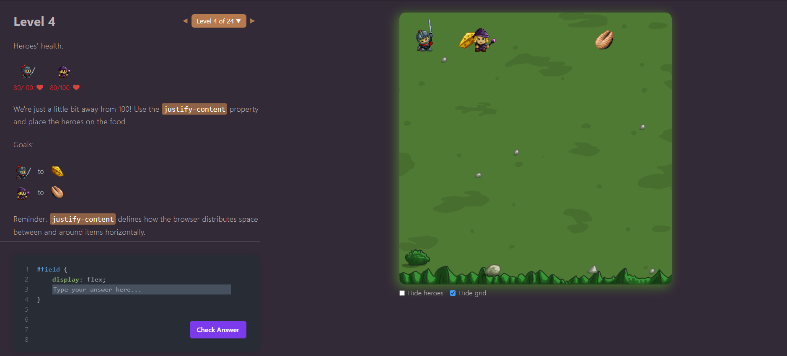
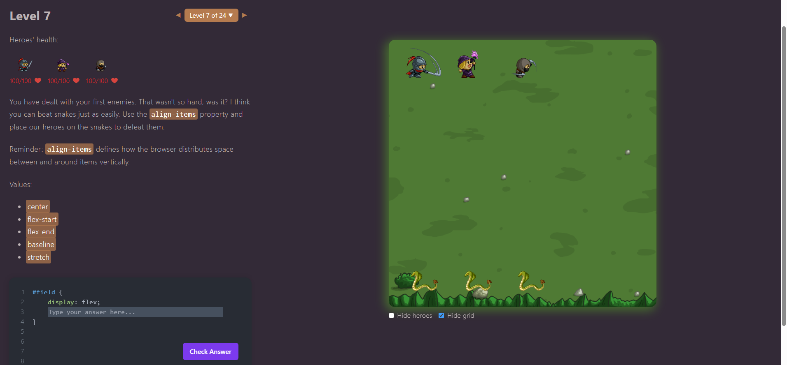
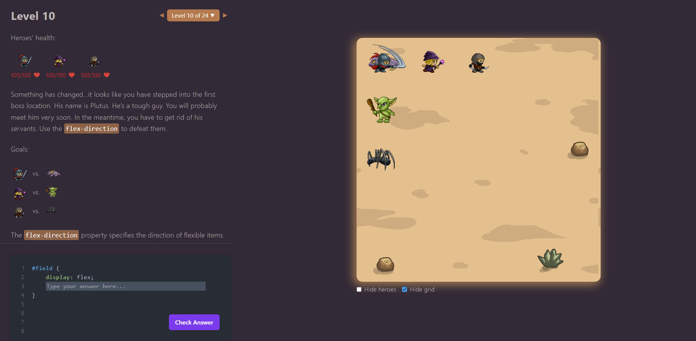
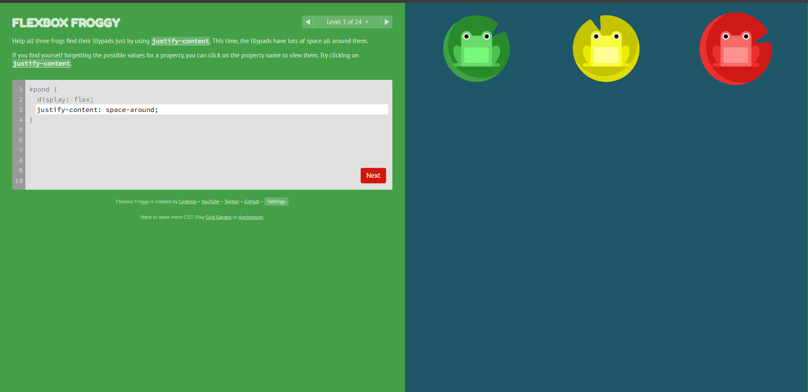
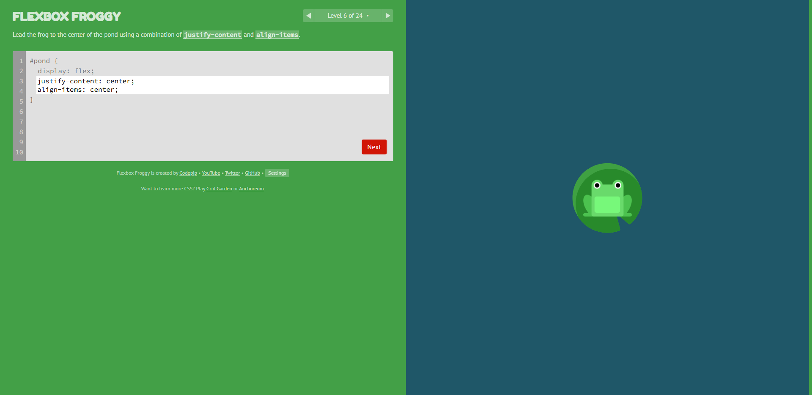
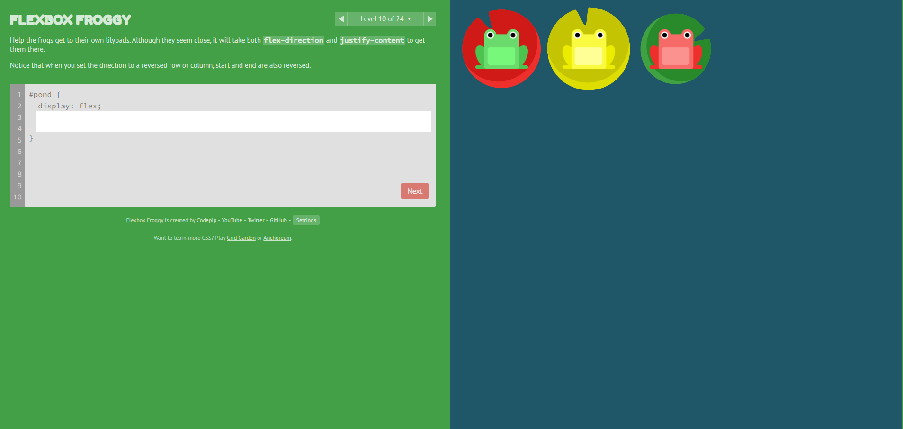

Nível 4

Neste nível usei justify-content para posicionar os heróis sobre a comida. Foi importante entender como distribuir o espaço no eixo principal.

Neste nível usei justify-content para posicionar os heróis sobre a comida. Foi importante entender como distribuir o espaço no eixo principal.

Usei align-items para alinhar verticalmente os heróis. Isso me ajudou a entender o eixo cruzado e o alinhamento vertical no Flexbox.

Aqui precisei usar flex-direction para mudar a direção dos itens e derrotar os inimigos. Testei row-reverse e column-reverse para ver como muda a ordem dos elementos.
Resumo das opções de flex-direction:
row: itens alinhados em linha da esquerda para direita (padrão).row-reverse: mesma linha, invertida.column: itens alinhados em coluna de cima para baixo.column-reverse: coluna invertida.
Para posicionar os sapinhos usei só justify-content. Foi interessante distribuir o espaço horizontalmente e testar os valores disponíveis da propriedade.

O objetivo era centralizar o sapinho usando justify-content e align-items. Aprendi a combinar os dois eixos para posicionar elementos.

Nível mais difícil até agora, precisei combinar flex-direction e justify-content. Foi confuso no início, mas depois entendi como a direção afeta o alinhamento.
display: flex; — ativa o Flexbox em um container.flex-direction — define se os itens ficam em linha ou coluna e sua ordem.justify-content — alinha itens no eixo principal (horizontal).align-items — alinha itens no eixo cruzado (vertical).flex-wrap — permite que itens quebrem linha.align-content — controla espaçamento entre linhas múltiplas.order — muda a ordem visual dos itens.
Para criar um menu responsivo, usaria Flexbox para alinhar os links horizontalmente, com justify-content: space-between; para distribuir os itens e align-items: center; para alinhamento vertical. Em telas menores, aplicaria flex-wrap: wrap; para que os links possam quebrar em várias linhas e manter o menu organizado.